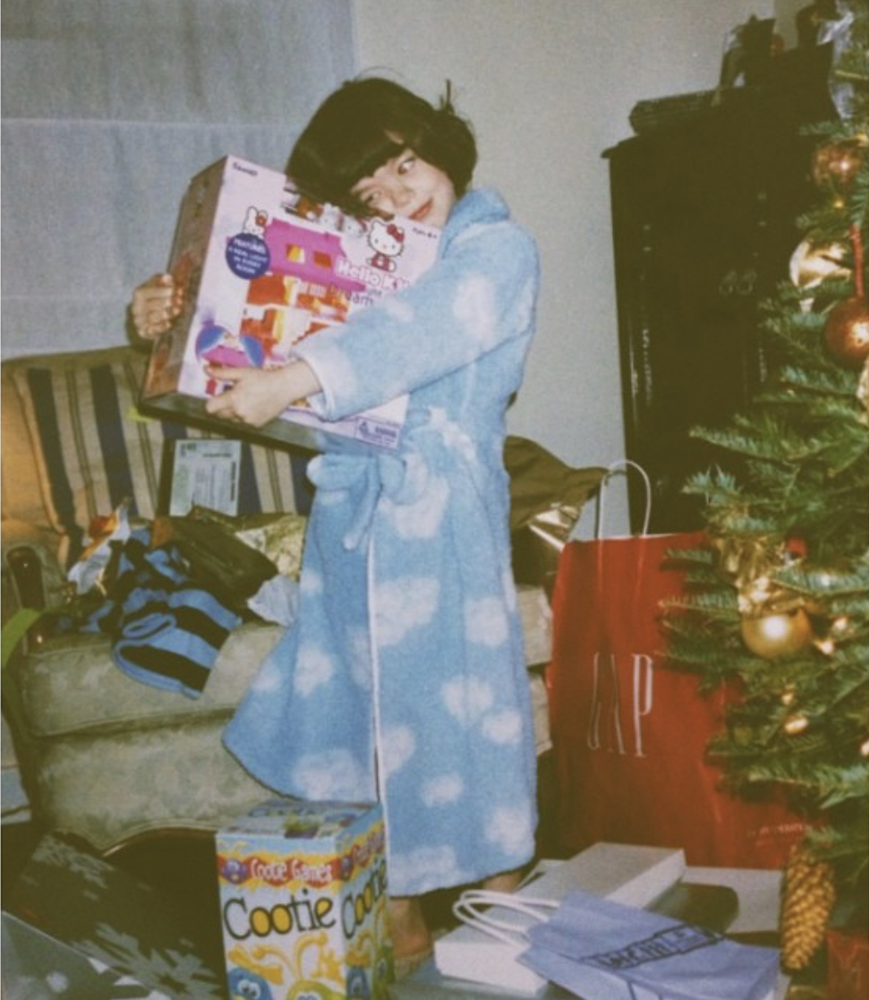
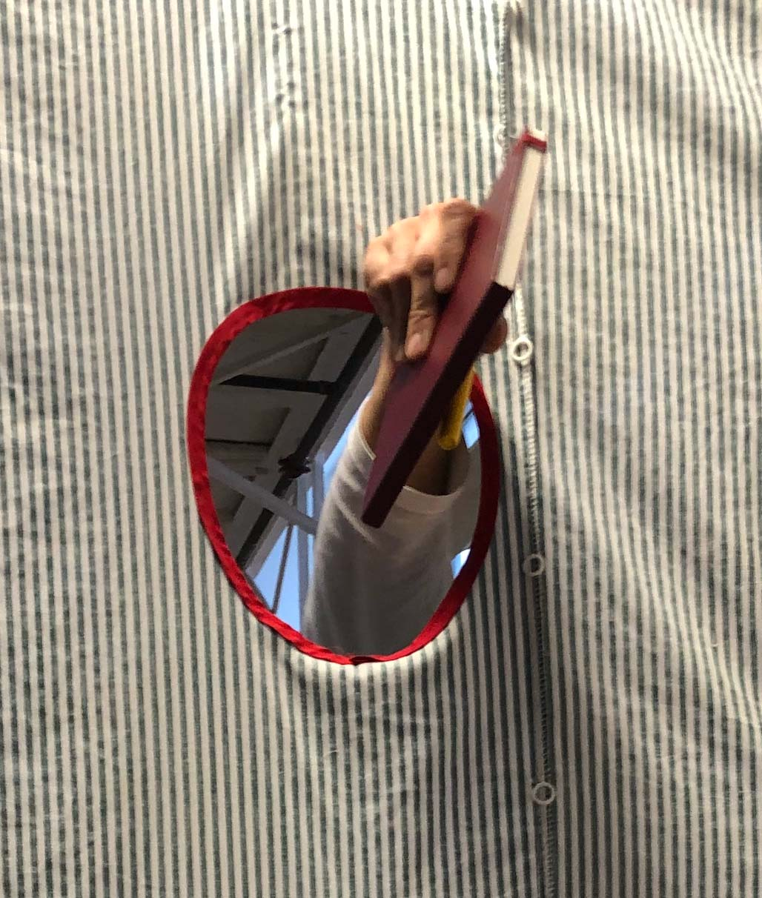
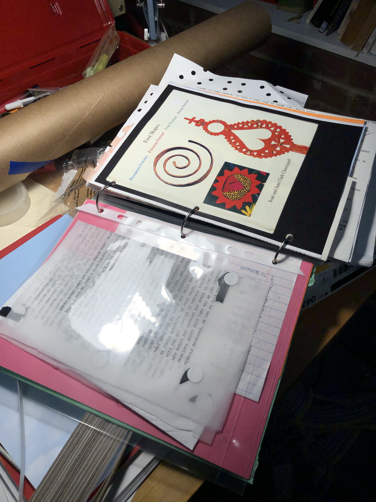
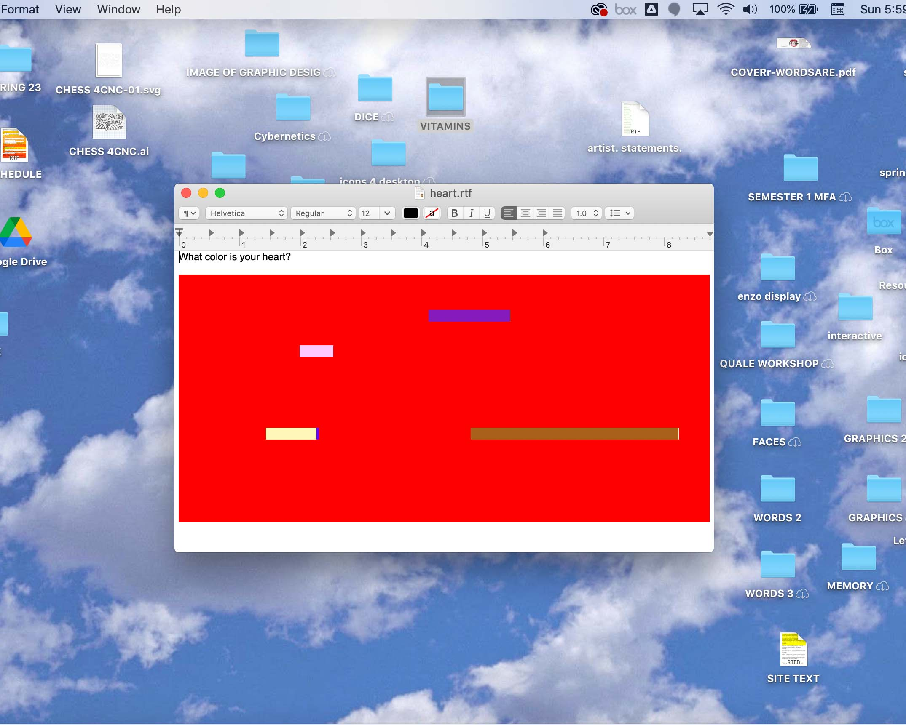
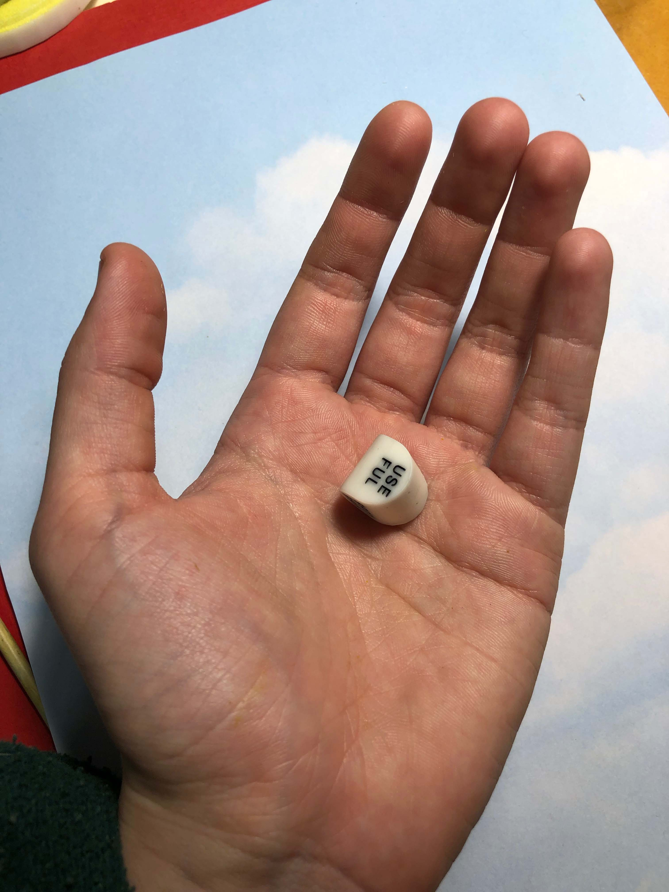
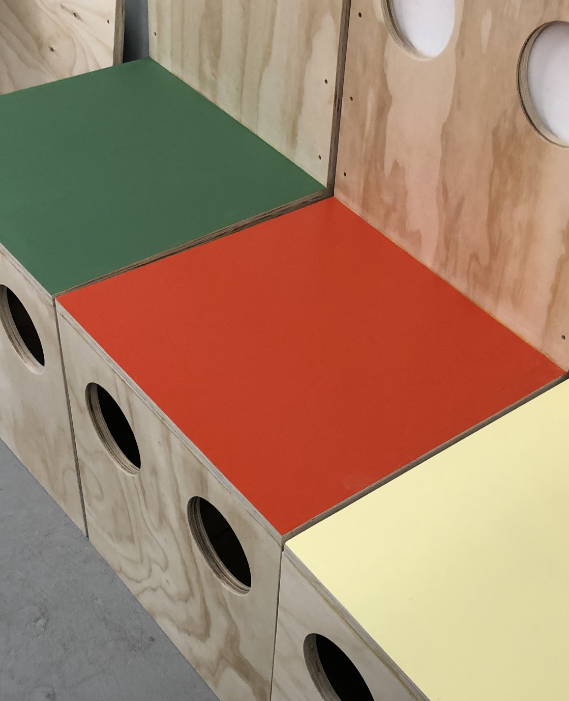
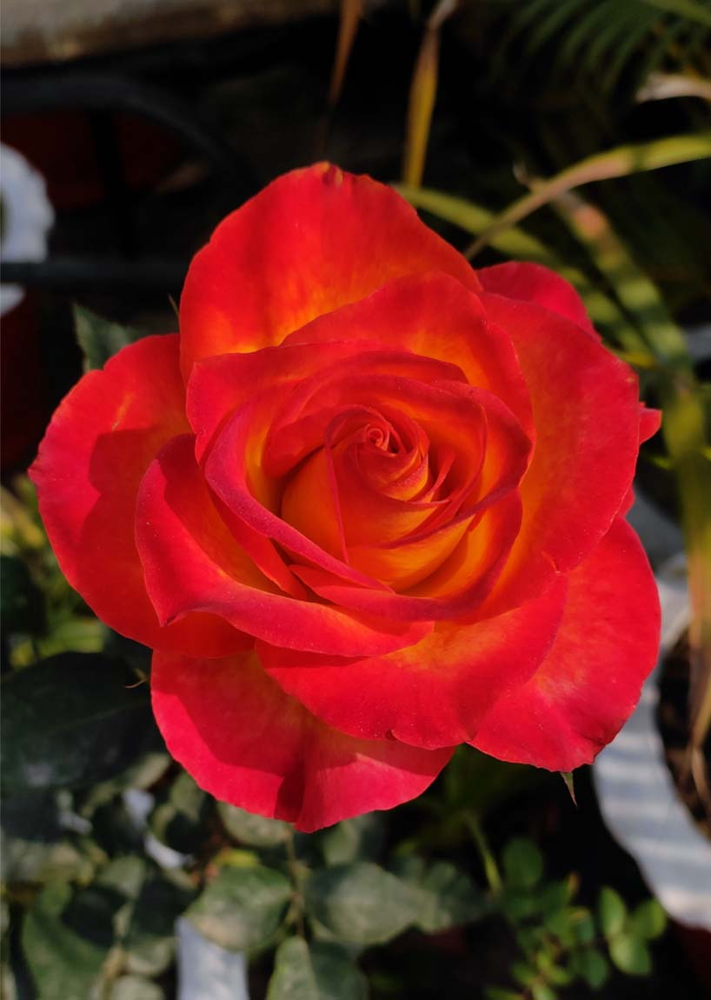
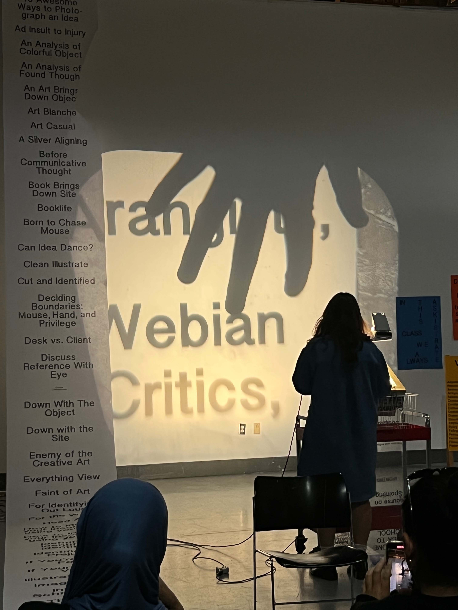
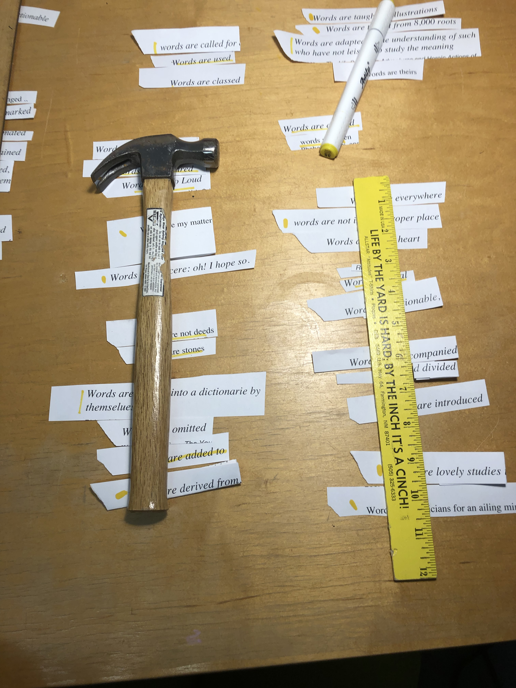

☞pinch my site to get more out of it☜
The following is a brief overview of what I was thinking about and making this semester. I wanted to use this site to TELL you more so I can SHOW you more when you can actually hold these things in your hands and see them in person because that is very important to me
I started the semester thinking about stones, clouds, and shadows.
These seem to be my first tools for finding and making symbols. These are the things I have loved for the longest and am still drawn to.
They have become metaphors for how I describe my understanding and fascination with structures of language.

I seem to make everything physical in order to understand it better. Maybe I lack abstract thinking.
Even when I make a grocery list, I need to draw all the foods.
When I write I need to hear the scratching and feel the paper. I only switched to an IBM selectric this semester because my handwriting is really hard to decipher after the writing is done.
A teacher mentioned recently that it seems like my work is about relating the non-physical and the abstract to a physical form or experience. This is what I do naturally so it doesn’t feel like work or art or anything.
It is how I make sense of things. It is how I would play as a child, and it’s how I calm myself down now as an adult.
This is how I read the world and understand it. My mother is the same way. She resists the assistance of computers, she has her important information on slips of paper at the bottom of her purse. She memorizes our phone numbers. She writes lists like I do with drawings in the margins. And on Saturday mornings she would write the chores on individual slips of paper and put them in a bowl for us to pick out of.
Many times I’ve been frustrated with her inability to adjust even though I resist the same things.
Sometimes I get frustrated with machines when they don’t work the way I do or understand which information is important to me.
As a response to this dilemma, I end up making lots of tools this semester that are customized to the way I work and think:

A curtain that I installed as the 4th wall of my workspace with 7 holes cut into it; one for my dogs head, one for mine, one for placing things onto my desk, one for peeking with one eye, one for my tall classmates, and two fit for a hand to reach through.

A scrap book which acts as my annotated bibliography. This in many ways has replaced my computer as a tool for collecting references and writing.

A personalized pop up ad function on my computer. Using python and a cron-job, my computer writes and opens a prompt onto my desktop everyday at a random time. This is a vitamin sized meditation that helps me remember I am not a machine. I have sent the code to some of my friends to use and edit as their own pop up meditation tool.

A set of dice. In the beginning of the semester I some dice on my desk
as a tool to help me pick a direction for new projects.
I have a hard time committing to my ideas and I wanted to make light of my frustration with a tool and toy. I created a system of 6 dice addressing different points of my process. Combined my dice can produce over 23,040 prompts.
The curtain, dice, and pop up ad gave me space to play with systems of chance and choice. The curtain specifically addressed choice, play, privacy, and interaction. I wanted to translate this idea into a new form which I did with a set of 3 chairs, or rather a malleable bench:

The bench has pieces between each chair the can fold in or out being used as dividers or open space. The bench can reconfigure into at least 16 different configurations.
I thought about how I work but I also about what I call my work and what I call myself.
Ainsley Rose Romero meaning: Ainsley ( a meadow of ones own), Rose (rose), and Romero (a pilgrim from Rome on a spiritual journey, alternatively, Rosemary)

My first project of the semester was a response to a prompt on “the image of graphic design” the space between the image and the thing itself. Are they one in the same?
This made me think about names and titles as verification and a way of making something real. I wanted to make new words for graphic design, and new verbs for what I do.
I decided to follow multiple methods for generating new words , I used an online name and title generator, I followed the instructions of blogs about how to name your product and brand with made up words, and I took words related to my practice and I combined them with new morphemes. I conjugated and conjugated. I made over 200 new words, titles and terms.
I decided that I am a Gesturian who specializes in formhood and debabbling with a great drawsture.

I performed a perspective first day of class which focused on teaching “Spointing”. I wrote with my words and spoke them as if they were real.

I ended the semester the way I started it, with words. Instead of making my own words I decided to not even let myself make my own sentences. I wrote 3 books about words using fragments of titles found in the Yale Library that contained “words are”.
At the close of the semester I'm thinking about all the kinds of writing I have done.
I write with scissors, I write with search words, I write with algorithms, collections, I write with blank spaces, I write with hole punches, I write with small objects, I write with colorful paper, I write with little experience, I write with poor spelling, I write with machines that are slower than me, and ones that are much faster.